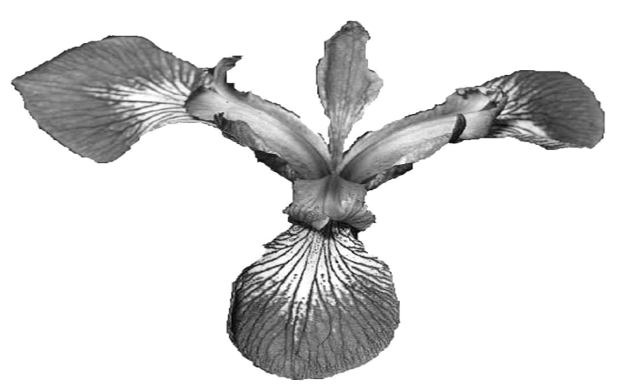
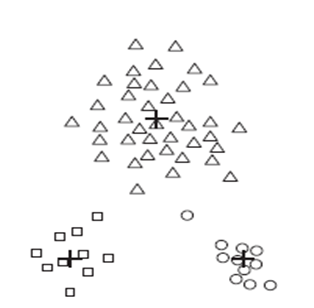
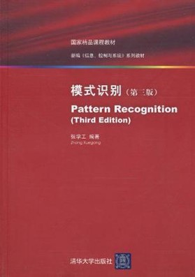

Pattern Recognition (Fall 2018)
Administrative Matters
Instructor: Dr. Ying Shen (沈莹) (yingshen@tongji.edu.cn)
Evaluation: assignments(40%), project (55%), participation (5%)
Latest Notices
Rename the zip file of each assignment with your name and the student ID!
Lecture Slides
|
Slides |
Related Materials |
|
 |
Introduction Data
Tutorial 01
Tutorial 02
|
1. UCI Machine Learning Repository
2. A tutorial on Principal Components Analysis
3. Feature selection techniques in bioinformatics
|
|
|
Model evaluation and selection
|
|

|
Linear model
Tutorial 03 Lab 1
Assignment 1 due date: Oct. 16
|
fisherLDAExperiment.m
|

|
Decision Tree
Tutorial 04
|
Decision tree implemented in matlab code
Source codes directory
|

|
Neural network
Assignment 2 due date: Nov. 6
|
|

|
SVM
Lab 2
|
|

|
Naive Bayes
|
|
|
|
Ensumble Learning
|
|
|

|
Clustering Analysis
Tutorial 05
Assignment 3 due date: Jan. 2
|
|
|
|
Dimension Reduction
|
|
|
|
Fundamentals
for Deep Learning |
-
Demo for linear regression
-
Demo for softmax regression
-
An easy tutorial for understanding backpropagation
-
Caffe: The most widely used
deep learning framework
-
Windows Caffe, Installation
Guide
-
Digit classification demo. Classify an image with a digit using
your trained LeNet. (For instructions, refer to Installation Guide)
-
Cifar10 test demo. Classify an image using your trained Cifar10
network. (For instructions, refer to Installation Guide)
-
Self Data Training. This ZIP file contains all the necessary
files to conduct self-data training mentioned in Installation Guide.
-
K. He et al.,
Deep Residual Learning for Image Recognition, CVPR 2016
-
G. Huang et al.,
Densely Connected Convolutional Networks, CVPR 2017
-
J.
Redmon et al.,
Yolo: 9000 better faster stronger, CVPR 2017
-
Learn to configure YoloV2 and try to solve your
own detection task,
https://github.com/AlexeyAB/darknet
|
|
|
Applications of CNNs |
-
Lin Zhang, Junhao Huang, et al.,
Vision-based parking-slot detection: A DCNN-based approach and a
large-scale benchmark dataset, IEEE Trans. Image Processing, 27
(11) 5350-5364, 2018. Project site:
https://cslinzhang.github.io/deepps/
-
Z. Cao et al.,
Realtime multi-person 2D pose estimation using part affinity fields,
CVPR 2017
-
CMU OpenPose Libary,
https://github.com/CMU-Perceptual-Computing-Lab/openpose
|
|
|
GANs
and Their Applications in Image Generation
|
-
I.J.
Goodfellow et al.,
Generative
adversarial nets, NIPS, 2014
-
A.
Radford et al.,
Unsupervised representation learning with deep convolutional
generative adversarial networks, ICLR, 2016
-
M.
Arjovsky et al.,
Towards principled methods for training generative adversarial
networks,
ICLR, 2017
-
M.
Arjovsky et al.,
Wasserstein GAN,
arXiv, 2017
-
I.
Gulrajani et al.,
Improved training of Wasserstein GANs, arXiv, 2017
-
P.
Isola, J. Zhu, T. Zhou, and A.A. Efros,
Image-to-image
translation with conditional adversarial networks, CVPR, 2017
-
J.
Zhu et al.,
Unpaired image-to-image translation using cycle-consistent
adversarial networks, arXiv, 2017
-
C.
Ledig et al.,
Photo-realistic single image super-resolution using a generative
adversarial network, CVPR, 2017
-
A.
Shrivastava et al.,
Learning from simulated and unsupervised images through adversarial
training, CVPR, 2017
|
|
|
*Matlab Tutorial
Examples for Matlab Tutorial
|
A matlab tutorial document
|
Assignments
Notes:
1. Compress all files into a .zip file whose name is composed of student name and ID. (such as "ID_name_assignment1.zip")
2. Plagiarism is forbidden and resubmission is not allowed.
3. For the programming assignments, you can use any programming language as
you like.
4. All the documents you hand in, including comments in the source codes, should be in English.
5. Send your solutions to
prtj2018@163.com
Marks
Final Projects
Notes:
1. Compress all files into a .rar or .zip file whose name is composed of student name and ID (such as "ID_name_project.zip").
2. All the documents you hand in should be in English.
Requirement details for the program and the report:
Project contents
- You can choose any related topics which you are interested in as your final project.
- The team size should not be greater than 3 students.
Program (25 points)
- You should submit your program for the final project and a readme file with instructions on how to run the program.
Report (30 points)
- Your report should be written in English and contain the following contents:
1. Describe the problem you want to solve;
2. A survey on the selected topic and related methds;
3. The structure (or workflow) and functionality of your program;
4. Performance evaluation;
5. Advantages and disadvantages of your method;
Marking
Program: Origninality of the selected topic or applied method (published since 2010) (10');
Performance (10') Complexity of the project (workload) (5') |
Report: 1. (5'); 2. (8'); 3.(5'); 4. (7'); 5. (3'); Clarity (2') |
|
|
Main References
| |
 |
《机器学习》 周志华 清华大学出版社 |
Other Related Materials
| |
 |
Pattern Classification Richard O. Duda, Peter E. Hart, David G. Stork |
| |
 |
模式识别 张学工 清华大学出版社 |
Created on: Sep. 11, 2018
Last updated on: Sep. 11, 2018